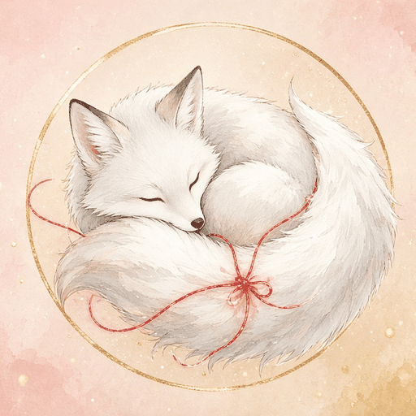

縁をほどく

白乃
白狐が知らせる縁の流れ
白狐が運ぶ便りから、
ご縁とこれからの流れを視ます。
初回無料鑑定のご案内
ご縁を感じてくださった方に、初回無料鑑定を行っています。
今いちばん気になっていることを、一つだけ見ます。
- LINEで友だち追加下のボタンから「白乃の鑑定所」を追加してください。
- 受付の質問に返信呼び名（本名でなくて大丈夫です）、生年月日、今のお悩み、本当はどうなりたいかなどを、トークにそのまま返信してください。
- 無料鑑定が届きます内容を確認でき次第、順番にご連絡します。お渡しまでのおおよその時間も、LINEでお知らせします。
LINEで無料鑑定を受け取る
LINE公式アカウント「白乃の鑑定所」が開きます
離れていく縁を追うほど、
人は自分との縁を
失っていきます。
無料鑑定のあと、ご希望の方にだけ、有料の本鑑定（3つのプラン）をご案内しています。